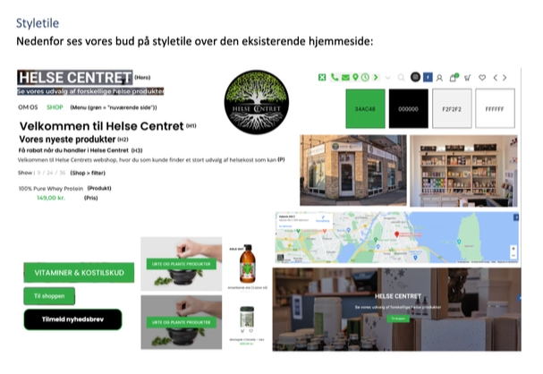
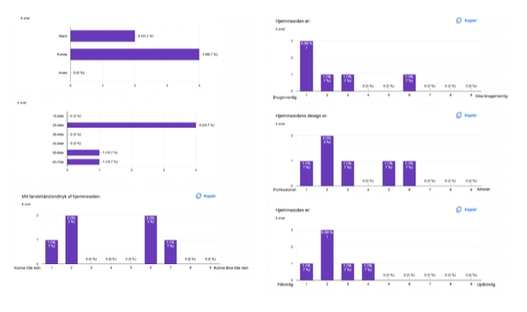
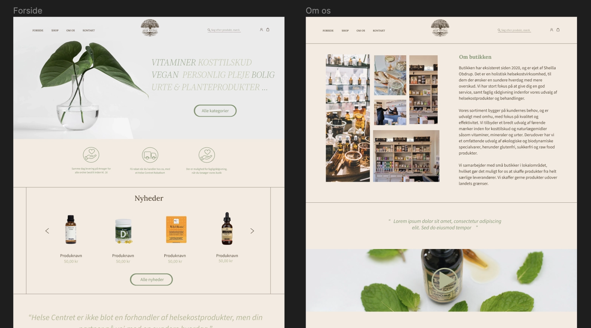
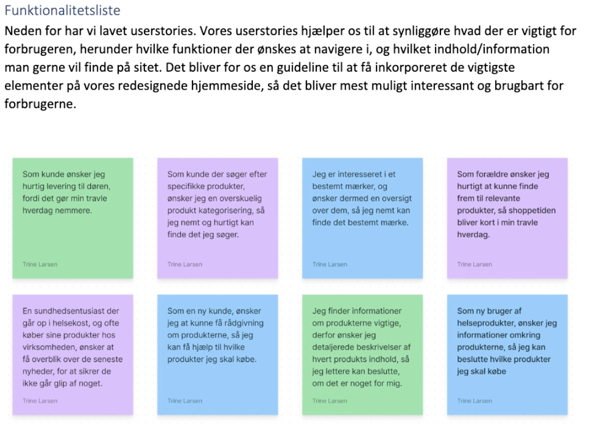

Dette tema bestod af to dele. I den første del skulle vi lave en video, hvor vi interviewede en
person om vedkommendes passion.
Link til videositet her
I den anden del arbejdede vi i grupper af fire for at finde en virksomhed og redesigne deres
hjemmeside.
Link til virksomhedssitet her
Vedrørende virksomhedsopgaven begyndte vi, efter at have fundet en butik at
arbejde sammen med, at
analysere deres hjemmeside
ved at lave et styletile og Bert-test for at forstå, hvor brugervenlig hjemmesiden var. Vi
indhentede viden om
virksomhedens specifikke behov og mål gennem direkte samtaler med ejeren, hvilket inkluderede at
forstå virksomhedens
målgruppe, produkter og deres USP.

'
Efter at have fået tilstrækkelige oplysninger om forretningskonceptet begyndte vi at udvikle
brugercentreret design ved
at identificere og imødekomme specifikke brugerbehov for at skabe en mere intuitiv og effektiv
brugeroplevelse på
hjemmesiden. Vi anvendte designværktøjer som Figma og implementerede designbeslutninger ved
hjælp af HTML, CSS og JS.
Dette projekt har hjulpet mig med at opbygge kompetencer inden for projektstyring, da redesign
af en hjemmeside kræver
planlægning, koordinering og effektiv udførelse af opgaver for at nå fastsatte mål. Projektet
har også udviklet mine
kommunikationskompetencer gennem interaktion med virksomhedsejeren og andre interessenter.
Dette inkluderer evnen til
at formidle ideer klart, præsentere designløsninger og håndtere feedback.

